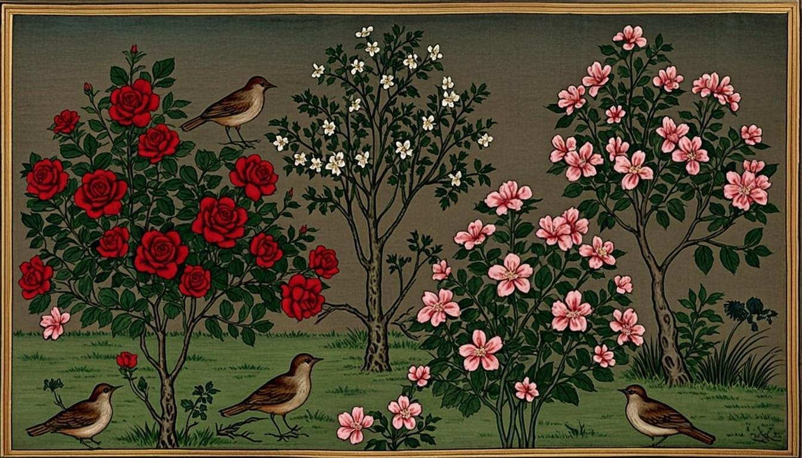
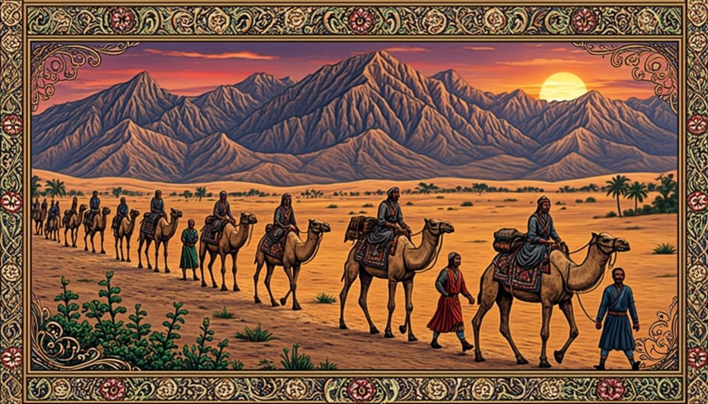
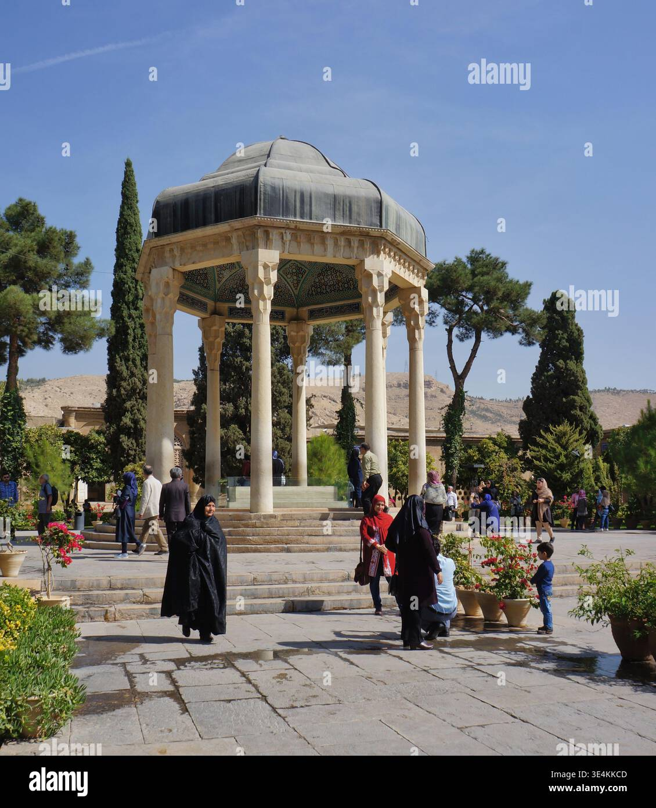

غزل آفرینش، حکایت سفر، عجایب صنَع حق تعالی و شعرخوانی پرواز؛ با معنی و آرایهها

این جزوهٔ مصور، فصل اول فارسی نهم (زیبایی آفرینش) را پوشش میدهد: معنی و آرایههای غزل «آفرینش همه تنبیه خداوند دل است»، تحلیل حکایت سفر، خوانش نثر قابوسنامه (عجایب صنَع حق تعالی)، شعرخوانی پرواز و الگوی کامل پاسخنویسی قرابت معنایی — مطابق کتاب رسمی ۱۴۰۵–۱۴۰۶.
درس ۱ + ۲بانک تمرینتقویم مطالعهپروژهٔ دفتر زیبایی
کتابهای درسی پایه نهم · سال ۱۴۰۵–۱۴۰۶منبع: chap.sch.ir
🎯 اهداف یادگیری
غزل «آفرینش همه تنبیه خداوند دل است» را بخوانید و معنی سطربهسطر درک کنید
آرایههای ادبی درس (تشخیص، تلمیح، جناس، مراعاتالنظیر و...) را شناسایی کنید
حکایت «سفر» را تحلیل کنید و پند آن را به زندگی خود پیوند بزنید
نثر عربیوار «عجایب صنَعِ حق تعالی» از قابوسنامه را بخوانید و واژگان کهن را بیاموزید
در «شعرخوانی: پرواز» موسیقی شعر و مخاطب را تشخیص دهید
🧭 پیشنیازها
آشنایی با وزن شعر فارسی (تفعیل ساده) از پایههای قبل
واژگان آرایههای ادبی پایهٔ هشتم (تشبیه، تشخیص)
مهارت علامتگذاری و نیمفاصله در متنهای کهن
درس ۱ — آفرینش همه تنبیه خداوند دل است
این درس غزلی دلنشین است که کتاب درسی آن را از کلیات سعدی، بخش قصاید نقل کرده است. شاعر در آن، همهٔ موجودات عالم را معلمِ دل میداند: هر برگ درخت، هر پرندهٔ سپیدبال و هر ستارهٔ شب، پیامی برای انسانِ صاحبدل دارد. سراسر غزل پر از تصویرهای زیبای طبیعت است و پیام اصلیاش «تأمل در آفرینش» است.
باغ ایرانی؛ فضایی که شعر «آفرینش» در آن نفس میکشد
معنی سطربهسطر (بخش نخست غزل)
✏️ معنی و تفسیر ابیات کلیدی
«آفرینش همه تنبیه خداوند دل است / لیل و نهار بامدادی که توش؟»
«چو باد بامدادانی، خوش بود دامن صحرا / و تماشای بهار»
حل گامبهگام:
بیت ۱: تمام جهان، آگاهیبخشِ دلِ معرفتمند خداوند است؛ شب و روزِ آغازین (یا شب و روزِ هر بامداد) چگونهاند؟ — یعنی هر لحظهٔ طبیعت، نشانهای از خداوند است.
بیت ۲: مانند بادِ صبحگاهی، دامن دشت و تماشای بهار خوش است — دعوتی به نگاه کردنِ دقیق به طبیعت.
تشخیص (جانبخشی): نسبت دادن آگاهی و اندرزگویی به آفرینش («آفرینش... تنبیه میکند»).
تلمیح: اشاره به باورها و داستانهای دینی و ادبی؛ دعوت به تفکر در نشانههای الهی.
مراعاتالنظیر: همخانوادگی مفهومی واژهها: لیل و نهار، صحرا و بهار، باد و بامداد.
ایهام و ایهامتنزیل: دوپهلو بودن واژههایی چون «بامدادی» که سطح دوم معنا را فعال میکند.
مولّا (نکتهسنجی): دیدن نکتههای پنهان در پدیدههای سادهٔ روزمره.
💡 نکته
نکتهٔ امتحانی: هرگاه در سؤالها «چرا شاعر طبیعت را آموزگار میداند؟» آمد، پاسخ را در پیوند «تنبیه» (هشدار و آگاهی) و «خداوند دل» (انسانِ معرفتمند) بیابید: چون نظم و زیبایی آفرینش، انسانِ هوشیار را به شناخت خداوند و اندیشه فرا میخواند.
✏️ فعالیت واژگان — معنی واژههای کتاب
معنی این واژهها را با کمک متن و فرهنگ لغت پیدا کنید: تنبیه، دامن صحرا، بامداد، مولّا، سپیدبال، غرّه.
حل گامبهگام:
تنبیه: آگاه کردن، هشدار دادن و بیدار کردن فهم.
دامن صحرا: کنارهٔ دشت و بیابان (استعاره از گسترهٔ زمین).
بامداد: صبح زود، آغاز روز.
مولّا: نکتهسنج، کسی که از هر چیزی نکته میگیرد.
سپیدبال: پرندهٔ خوشبخت و پاکسرشت (در ادبیات کنایه از سعادتمند).
غرّه: فریبخورده، غافل.
حکایت — سفر
حکایتهای فارسی، پند را در لباس داستان میپوشانند تا در ذهن بمانند. در حکایت «سفر»، سخن از کسی است که خانه و شهر خود را رها میکند تا در راه، هم دنیا را ببیند و هم خودش را بشناسد؛ چراکه بهراستی هر سفری، از خودِ انسان آغاز میشود و به شناختِ خود میرسد.

کاروان در راه؛ سفر بهمثابهٔ مکتبی متحرک
✏️ تحلیل حکایت برای ارزشیابی
پرسشهای معمول ارزشیابی: پیام حکایت چیست؟ سفر چه نقشی در رشد انسان دارد؟ کدام تعبیر کنایه است؟
حل گامبهگام:
پیام: سفر، تجربه و بینش میآفریند؛ انسان با رفتن، «خودِ در خانه مانده» را هم کشف میکند.
نقش سفر: دیدن اقوام و اخلاق دیگران، تحمل سختی، خودسازی و پختگی.
کنایهٔ کلیدی: «دست و دلبازی» و تعبیرهای مشابه که معنای حقیقی ندارند و کنایه از بخشندگی/شجاعتاند.
نکتهٔ نگارشی: در بازنویسی حکایت، فعلهای کهن (کند، گشت، برد) را با معادل امروزی گره نزنید؛ سبک را حفظ کنید.
🎓 راهنمای تدریس (معلم و اولیا)
حکایت را با روش «نمایش دو نفره» تدریس کنید: دو دانشآموز نقش را اجرا کنند و کلاس بعد از اجرا، پند حکایت را خودش استخراج کند. سپس از هر گروه بخواهید یک «حکایت خانوادگی» از پدربزرگ/مادربزرگها جمعآوری و در جلسهٔ بعد بازگو کنند — پیوند ادبیات با حافظهٔ فرهنگی خانواده.
درس ۲ — عجایب صنَعِ حق تعالی
این درس گزیدهای نثر و آهنگین از قابوسنامهٔ عنصرالمعالی کیکاووس بن اسکندر است؛ اثری آموزنده از قرن پنجم هجری. نویسنده با شگفتی، کمالها و صنعتهای خداوند در آفرینش انسان را برمیشمارد: چشم که دیده میکند، دست که میگیرد، و دهان که هم گفتوگو میکند و هم خوراک میپذیرد. زبانِ متن، فارسیِ آمیخته به عربیِ دوران است و فرصتی بینظیر برای واژهآموزی کهن.
واژههای کلیدی درس ۲
واژه
معنی
واژه
معنی
صنَع
کردار، صنعت و کمال آفرینش
مُصنَع
ساخته، آفریده
حولیه
در محدودهٔ توان
معجون
ترکیبشده، همآمیخته
مجهول
ناشناخته، پنهان
زبان حال
گفتار بیزبانِ اشیا
مؤنّف
همآمیخته و هماهنگ
متمایز
جدا و متمایزشده
✏️ درک مطلب — ستایش اندامها
نویسنده چرا از میان اندامها، بیش از همه بر «دست» و «زبان» درنگ میکند؟ پاسخ را با عبارت متن بنویسید.
حل گامبهگام:
دست، ابزار کار و هنر و کمک به دیگران است؛ به همین ستایش آن را با ستایش زبانِ دانا همراه میکند.
زبان، هم ابزار گفتار است و هم چشنده؛ همین دوگانگی، «عجیب» بودن صنعت خداوند را نشان میدهد.
پند درس: سپاس نعمتها در استفادهٔ درست از تواناییهاست — دستِ تو را برای بخشش و کار نیک آفریدهاند.
🚀 ترفند طلایی
برای معنی متون نثر کهن، ابتدا فعلها را پیدا کنید (زمان و شخص)، بعد نهادها را؛ در پایان قیدها و مفعولها را جای مناسب بگذارید. ترجمهٔ شفاهیِ خطبهخط را روی دفتر تمرین بنویسید؛ سرعت معنیکردن شما در آزمونها دو برابر میشود.
شعرخوانی — پرواز
در بخش شعرخوانی، شعری دربارهٔ پرواز و رهایی دارد که با موسیقیِ روان خود، حس بلندشدن را منتقل میکند. هنگام خواندن به سه چیز دقت کنید: مخاطب شعر (شاعر با که سخن میگوید؟)، حالوهوای عاطفی (شادی، امید، اشتیاق) و موسیقی (تکرار واژهها و سجعهای آهنگین). این سه سؤال، الگوی ثابت سؤالهای شعرخوانی در ارزشیابیهاست.

آرامگاه حافظ در شیراز؛ زیارتگاه شعر فارسی (عکس واقعی)
✏️ پاسخ پیشنهادی پرسشهای شعرخوانی
۱) شاعر در این شعر با چه کسانی همدلی دارد؟ ۲) کدام واژهها حس رهایی را تقویت میکنند؟ ۳) یک آرایه از شعر بیابید.
حل گامبهگام:
۱) با همهٔ انسانهای مشتاقِ پرواز و شکفتن — بهویژه نوجوانانِ رؤیاپرداز.
۲) واژههای حوزهٔ پرواز و نور (پر، باد، آسمان، روشنی) با مراعاتالنظیر، حس رهایی را میسازند.
۳) نمونه: تشخیص (پرها سخن میگویند) یا مراعاتالنظیر؛ بسته به مصرع انتخابی شما.
مهارتهای قرابت معنایی (پایهٔ این فصل)
در ارزشیابی فصل اول، با دو شعر «قرابت معنایی» داده میشود و میخواهند تشابهها را بیابید. الگوی چهارگانه پاسخ: (۱) شباهت موضوع — هر دو دربارهٔ چه؟ (۲) شباهت لحن — ستایش، شکایت، دعوت؟ (۳) شباهت آرایهای — هر دو تشخیص دارند؟ (۴) پیام مشترک — در یک جمله. با این الگو، هر سؤال قرابت معنایی قابل پاسخ است.
📝 تمرین نمونهٔ قرابت معنایی
شعر «آفرینش همه تنبیه...» و شعری دربارهٔ شکفتن گلها در بهار، از نظر پیام چه وجه مشترکی دارند؟
پاسخ:
هر دو، طبیعت را بهعنوان مرآتِ معنا نگاه میکنند: در یکی، آفرینش اندرزگوی دل است و در دیگری، شکفتنِ گل نشانهٔ امید و تازگی زندگی. پیام مشترک: دعوت به تأمل در زیبایی آفرینش و بهرهگیری از آن برای رشد درونی.
خطاهای رایج و نکات امتحان
«تنبیه» را به معنی تنبیه و مجازاتِ امروزی نگیرید؛ در متن یعنی آگاهی و هشدار.
در آرایهها، «تشخیص» بدون جهتگیری معنایی نمرهٔ کامل ندارد؛ حتماً بگویید این آرایه چه چیزی به متن میافزاید.
تلمیح را با ارجاعهای ساده اشتباه نگیرید؛ تلمیح، آوردن نام یا داستان دینی/ملی/ادبی است.
در قرابت معنایی، شباهت را از هر چهار محور بجوید نه فقط موضوع.
واژههای کهن را با معنی امروزی جور نکنید؛ «حولیه» یعنی در توان، نه در حوالی.
کاربرگ تمرین در خانه
🗂 کاربرگ تمرین در خانه
1دو بیت دلخواه از غزل «آفرینش» را انتخاب و برای هر یک: معنی + یک آرایه بنویسید.
2حکایت «سفر» را با زبان خودتان در ۶ سطر بازنویسی کنید؛ سپس پیام آن را در یک جمله.
3از متن درس ۲، پنج واژهٔ عربیِ آمیخته به فارسی بیابید و معادل فارسی هر یک را حدس بزنید.
4برای شعرخوانی «پرواز» یک نقاشی یا کلاژ بسازید و آرایهٔ متناظر را زیر آن بنویسید.
5یک شعر کوتاه ۴ مصرعی دربارهٔ بهار بسازید که حداقل یک تشخیص و یک مراعاتالنظیر داشته باشد.
📌 جمعبندی
آفرینش = کتاب معرفت؛ شاعر طبیعت را آموزگار «خداوند دل» میداند.
حکایت سفر: رشد و شناخت، در راه رفتن رخ میدهد.
قابوسنامه: زبان کهن + ستایش کمال صنعت خداوند در اندام انسان.
شعرخوانی: مخاطب + حالوهوا + موسیقی؛ سه کلید تحلیل.
قرابت معنایی: موضوع، لحن، آرایه، پیام — چهار محورِ پاسخنویسی.
🎓 راهنمای تدریس (معلم و اولیا)
پیشنهاد روند ۵ جلسهای: جلسهٔ ۱ خوانش اعرابگذاریشدهٔ غزل + کارت آرایهها؛ جلسهٔ ۲ حکایت با اجرای نمایشی؛ جلسهٔ ۳ نثر قابوسنامه با جدول واژگان دوستونی؛ جلسهٔ ۴ شعرخوانی و بازی «حسسنجی شعر»؛ جلسهٔ ۵ کارگاه قرابت معنایی با الگوی چهارگانه. در پایان جلسهها، بانک نمونه سوالات واژگان فصل را تمرین کنید؛ واژگان، ستون فقرات نمرهٔ فارسی است.
سخن پایانی فصل
💡 نکته
ادبیات، آینهٔ زیستن است: غزل حافظ/سعدی، حکایت سفر و نثر قابوسنامه هر سه یک حرف مشترک دارند — بنگر، بیندیش، راه برو. دفتر زیباییشناسیات را همین امشب باز کن؛ نخستین صفحهاش را به «آفرینش» بسپار.
بانک تمرین بیشتر (با پاسخ پیشنهادی)
📝 تمرین B1 — واژگان
معنی واژههای زیر را در جملهٔ خودتان به کار ببرید: تنبیه، سپیدبال، غرّه، مولّا.
پاسخ:
نمونه: کتاب خوب، «تنبیهکنندهٔ» خوابآلود ذهن است. / آن دانشآموز «سپیدبالِ» کلاس، همیشه اول شد. / از نمرهٔ خوب «غرّه» نشو؛ تمرین را ادامه بده. / «مولّای» ما آن است که از یک سفر، هزار پند میآورد.
📝 تمرین B2 — آرایه
در عبارت «بادِ صبحگاهی، پیامآورِ گلهاست» دو آرایه بیابید و نام ببرید.
پاسخ:
تشخیص (جانبخشی به باد: پیامآوری) و مراعاتالنظیر (باد، صبحگاه، گل — حوزهٔ طبیعت صبحگاهی). ذکر تأثیر آرایه (زندگیبخشی به صحنه) نمرهٔ کامل میآورد.
📝 تمرین B3 — درک حکایت
اگر قرار باشد برای حکایت «سفر» یک عبارت کلیدی بهعنوان پند بنویسید، چیست؟
پاسخ:
نمونه: «هر سفری، پیش از آنکه به جایی برسد، تو را به خودت میرساند.» — یا معادلهای دیگر با محور شناخت و پختگی در سفر.
📝 تمرین B4 — نثر کهن
در متن قابوسنامه، «صنَع» و «حولیه» را معنی کنید و با هر یک یک ترکیب بسازید.
پاسخ:
صنَع = کردار و کمال آفرینش؛ ترکیب: صنَعِ بینظیر. حولیه = در محدودهٔ توان؛ ترکیب: کاری حولیهٔ ما نیست.
📝 تمرین B5 — قرابت معنایی
میان غزل «آفرینش» و متنی که شکفتن گل را نشانهٔ امید میداند، دو وجه مشترک بنویسید.
پاسخ:
(۱) موضوع مشترک: تأمل در پدیدههای طبیعت؛ (۲) لحن مشترک: ستایشآمیز و امیدبخش؛ (۳) پیام مشترک: طبیعت، آینهٔ معنا و مایهٔ رشد روح انسان است.
تقویم مطالعهٔ یکهفتهای فصل زیبایی آفرینش
روز
موضوع
خروجی نوشتاری
شنبه
غزل آفرینش: خوانش با اعراب + معنی
معنی ۴ بیت + جدول واژه
یکشنبه
آرایههای غزل
شناسنامهٔ آرایهای ۶ بیت
دوشنبه
حکایت سفر
بازنویسی ۶ سطری + پیام
سهشنبه
قابوسنامه: واژگان و درک مطلب
جدول واژگان دوستونی
چهارشنبه
شعرخوانی پرواز
تحلیل مخاطب/حالوهوا/موسیقی
پنجشنبه
کارگاه قرابت معنایی
پاسخ کامل یک تمرین قرابت
جمعه
مرور + نمونه سوالات
اصلاح خطاها + کارت واژگان
واژهنامهٔ جیبی فصل
واژه
معنی
واژه
معنی
تنبیه
آگاهی، هشدار
بامداد
صبح زود
مولّا
نکتهسنج
غرّه
فریبخورده
سپیدبال
سعادتمند
صنَع
کردار/کمال آفرینش
حولیه
در توان
معجون
ترکیبیافته
متمایز
جدا، ممتاز
زبان حال
گفتار بیزبانِ اشیا
پروژهٔ خلاقانه: «دفتر زیباییشناسی من»
یک دفترچهٔ کوچک بسازید و یک هفته، هر روز یک «زیباییِ دیدهشده» ثبت کنید: یک عکس یا نقاشی از طبیعت + یک مصرع از شعرهای کتاب که با آن همخوان است + یک جملهٔ تجربهٔ خودتان. در پایان هفته، صفحهٔ آخر دفتر را به «قرابت معناییِ زندگی من» اختصاص دهید: کدام شعر با کدام تجربهٔ شما قرابت داشت؟ این دفتر، بهترین مقدمهٔ برای درس «فصل آزاد: ادبیات بومی» هم هست.
🎓 راهنمای تدریس (معلم و اولیا)
برای تثبیت آرایهها، بازی «کارت آرایه» را اجرا کنید: ۲۰ کارت (نام آرایه) و ۲۰ کارت (نمونهٔ مصرع)؛ تیمها در ۳ دقیقه جفتسازی کنند. تیم برنده، آرایهٔ برندهٔ خود را برای کلاس توضیح میدهد. تکرار بازی در دو هفته، تشخیص آرایه را از حفظیات به مهارت تبدیل میکند.
تحلیل بیتهای بیشتر از غزل آفرینش
✏️ چهار بیت دیگر — معنی + آرایه
در این بخش چهار بیت پرتکرار در ارزشیابیها را با هم میخوانیم. برای هر بیت: معنی روان + یک آرایهٔ برجسته.
الگوی پاسخنویسی معنی: (۱) واژههای ناآشنا را معنی کن (۲) ساختار را به فارسی امروزی برگردان (۳) در یک جملهٔ روان بنویس.
حل گامبهگام:
چارچوب مفهومی چهار بیت پرتکرار: (۱) بیتی که گل و بلبل را به گفتوگو وادار میکند → تشخیص؛ جانبخشی به گل و بلبل، رنگ شاداب بهار را «زبان» میدهد. (۲) بیتی دربارهٔ سحرگاه و نسیم → مراعاتالنظیر صحرا/باد/بامداد؛ تصویر یکپارچهٔ سحرگاهی. (۳) بیتی که از «خداوند دل» سخن میگوید → استعاره از انسانِ معرفتمند؛ دل، خداوندگارِ بدن و شایستهٔ آگاهی است. (۴) بیتی که نعمتها را یادآور میشود → تلمیح به نعمتهای الهی؛ دعوت به شکر.
یادآوری: در برگهٔ پاسخ، معنی را «روان و کامل» بنویسید؛ معنیِ برشخورده (واژهبهواژه) نمرهٔ کامل نمیگیرد.
کارگاه املا و واژهیابی
بخشی از نمرهٔ ارزشیابی فارسی، املا و معنی واژه است. برای این فصل، واژههای پرخطای زیر را با تمرینِ «جملهسازی دوطرفه» تثبیت کنید: واژه را در جمله بگذارید و از همکلاسی بخواهید معنی را حدس بزند؛ سپس برعکس.
واژه
معنی
دامٔ رایج املایی/معنایی
تأنی
کُندی، درنگ
با «تانِی» اشتباه نشود
ضیاء
نور، روشنی
با «ضیا» یکسان است؛ همزه ننویسید
مستضعف
ناتوان، ستمدیده
با مستضِع اشتباه نگیرید
سرا
خانه، منزل
«سرای» هم درست است
قیام
برخاستن
معنی امروزین «شورش» در شعر کهن نیست
پیوند دستور با متن؛ فعلهای شعر و نثر کهن
در متنهای این فصل، فعلهای ماضی نقلی و ماضی بعید و ساختهای کهن (مثل «بُوَد» بهجای «است») زیاد دیده میشوند. هنگام معنی کردن، این ساختها را به فارسی امروزِ ساده برگردانید: «بُوَد» = هست/بوده است؛ «خواهد برد» = خواهد رفت. این تبدیل، نیمنمرههای معنی را نجات میدهد.
پرسشهای گفتوگوی کلاسی (Speaking فارسی)
به نظر شما چرا شاعران بزرگ، طبیعت را «معلم» میدانند؟ با یک مثال از زندگی خودتان توضیح دهید.
اگر قرار باشد یک «سفر آموزشی» برای کلاس طراحی کنید، کجا میروید و چه چیزی میآموزد؟
از حکایت سفر چه پندی برای دانشآموز امروزی میگیرید؟
کدام واژهٔ درس ۲ را در گفتار روزمره میتوانید به کار ببرید؟ نمونه بزنید.
یادگیری سفر است؛ هر تمرین، یک گام تا تسلط.
این جزوه بر پایهٔ کتاب درسی رسمی پایه نهم (سازمان پژوهش و برنامهریزی آموزشی، سال ۱۴۰۵–۱۴۰۶) تهیه شده است. موفق باشید! 🌟